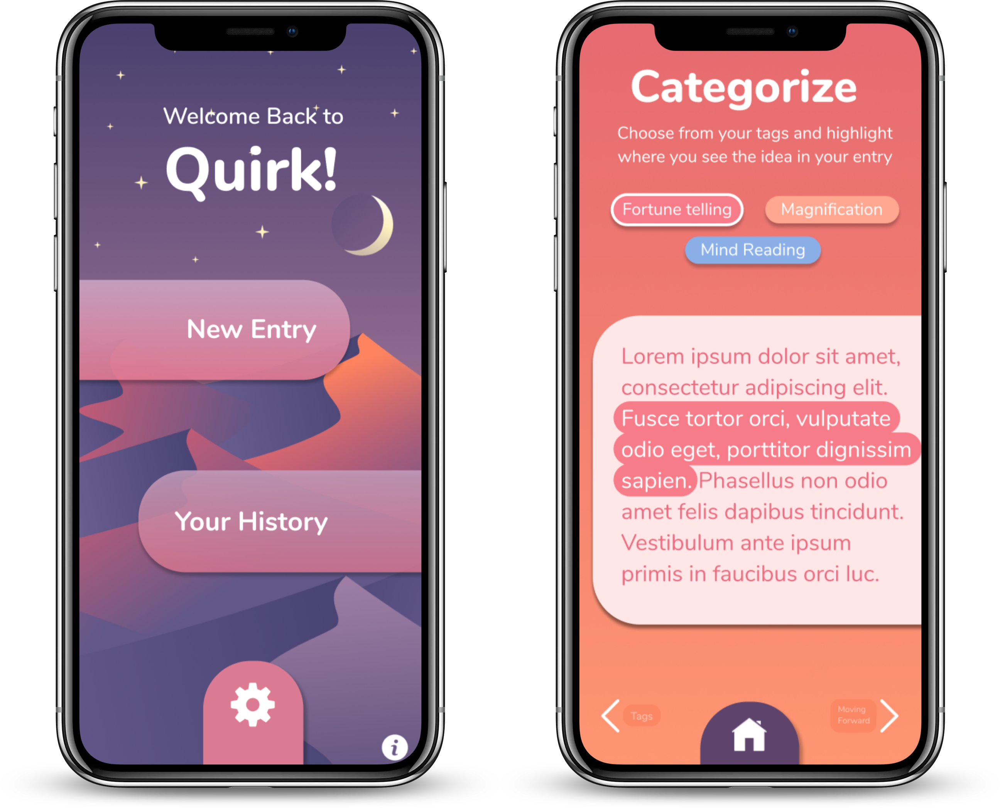

About the Project
The goal of this project was to create an interactive prototype focused on the user experience and UI/UX design for an App based on the creator's vision.
I worked with a group of 3 other Brown University students to design a prototype for Quirk, an app that provides a platform for journaling, personal reflection, accountability, and improvement with regards to mental health.
According to the startup's website, Quirk implements the popular cognitive behavioral therapy exercise of catching, checking, and changing the problem at hand. This kind of thinking can help people combat a variety of mental health concerns.
Skills
-
This project provided in-depth exposure to the iterative design process.
To begin, each member of the group pitched their low fidelity design sketches. Next, we combined features from each member's idea to create our initial wireframe. From there we made a usable prototype displaying our design and the app's core functionality. These included logging in, creating a post, and viewing old posts. Our prototypes were uploaded to UserTesting.com and review by our classmates.